- Dnes Otevírací doba
- Adresa Plzeňská 334, Toužim
- Telefon 604 782 468
O nás
Jsme malá rodinná hospůdka s letní zahrádkou, kde se můžete v klidu zastavit na dobré pivo a poctivé jídlo. Čepujeme skvěle ošetřený Pilsner Urquell, Kozla 11°, 10° i černého, dále pomelo-grep, domácí limonády a spoustu dalšího.
K jídlu vaříme klasiku české kuchyně, kterou máme rádi i my sami. O víkendech ji obměňujeme podle sezóny nebo chuti: někdy jsou to hody, často zahraniční kuchyně, jindy grilování na zahrádce při pěkném počasí. Prostě co nás zrovna napadne. Hlavně ať je všechno čerstvé, jednoduché, poctivé a chutné.
Děti se vyřádí na hřišti vedle nás, auto zaparkujete zdarma hned za budovou a o vaši pohodu se postará šéfová na place se svým mužem v kuchyni i jejich usměvavým týmem. Rádi vás u nás uvidíme 🧡🍻
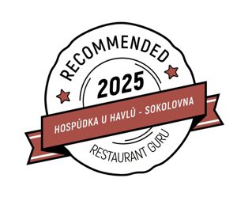
Recenze na Google ↑ Nahoru
↑ Nahoru
Stálý jídelní lístek
Každý víkend vaříme něco navíc. Od pátku do neděle doplňujeme stálý lístek o víkendové menu, které každý týden obměňujeme: jiné polévky, jiná hlavní jídla, čerstvé suroviny a nové chutě. Nabídka je omezená a platí do vyprodání. Co jsme vymysleli tentokrát, najdete vždy aktuálně na našem Facebooku.
Předkrmy
- Polévka dle denní nabídkydle nabídky
- Nakládaný Camembert95 Kč
- Pikantní utopenci95 Kč
- Smažené cibulové kroužky80 Kč
Hlavní jídla
- Svíčková na smetaně210 Kč
- Pikantní hovězí guláš210 Kč
- Vepřový řízek130 Kč
- Smažený sýr z Goudy135 Kč
- Smažený Camembert140 Kč
- Trhané vepřové maso zapečené s chilli Cheddarem210 Kč
Pro děti
- Rybí prsty s hranolky140 Kč
Přílohy
- Hranolky55 Kč
- Vařené brambory55 Kč
- Krokety60 Kč
- Bramboráčky 4 ks60 Kč
- Coleslaw salát70 Kč
Nápojový lístek
Ceník platí od 21. 10. 2026. Alkohol a tabákové výrobky osobám mladším 18 let neprodáváme.
Čepovaná piva
- Velkopopovický Kozel 10°0,5 l 43 Kč
0,3 l 30 Kč - Velkopopovický Kozel 11°0,5 l 46 Kč
0,3 l 34 Kč - Kozel černý nebo řezaný0,5 l 48 Kč
0,3 l 36 Kč - Pilsner Urquell0,5 l 59 Kč
0,3 l 39 Kč - Birell Pomelo-grep0,5 l 48 Kč
0,3 l 36 Kč
Lahvová piva
- Birell světlý (záloha na láhev 3 Kč)0,5 l 40 Kč
- Frisco dle nabídky (záloha na láhev 3 Kč)0,33 l 50 Kč
Vína a šumivá vína
- Rozlévané víno dle nabídky0,2 l 55 Kč
- Víno v láhvidle nabídky
- Bohemia Sekt0,75 l 300 Kč
- Prosecco0,75 l 280 Kč
- Aperol Spritz0,2 l 120 Kč
Moravská odrůdová vína v láhvi podle aktuální nabídky, zeptejte se obsluhy.
Nealko
- Točená malinovka0,5 l 40 Kč
0,3 l 24 Kč
0,2 l 16 Kč - Džus Toma dle nabídky (sklo)0,25 l 45 Kč
- Pepsi, Pepsi Light, Tonic, Zázvorový, Růžový, Mirinda, 7Up (sklo)0,25 l 45 Kč
- Red Bull (plech)0,25 l 60 Kč
- Mattoni perlivá, jemně perlivá, neperlivá (sklo)0,33 l 42 Kč
- Karafa vody s citronem1 l 50 Kč
- Domácí limonády dle nabídky0,4 l 60 Kč
Teplé nápoje
- Grog (rum) / Horká Griotka50 Kč
- Espresso, Ristretto, Lungo45 Kč
- Doppio (dvojité espresso)65 Kč
- Latte macchiato, Cappuccino60 Kč
- Turecká káva40 Kč
- Smetana do kávy5 Kč
- Čaj černý, ovocný, mátový, zelený40 Kč
Slané pochutiny podle nabídky na baru.
Destiláty (0,04 l)
- Pálenka Baron ze zralých hrušek77 Kč
- Vodka Amundsen42 Kč
- Vodka Finská55 Kč
- Vodka ovocná – jablko, hruška37 Kč
- Polar Jahoda42 Kč
- Malibu45 Kč
- Slivovice Jelínek57 Kč
- Božkov Originál, Zelená, Griotka36 Kč
- Rum Republica Exclusive (Božkov)54 Kč
- Captain Morgan (Jamajka), Heffron (Panama)55 Kč
- Ron Barceló Gran Añejo 4y (Dominikánská rep.)70 Kč
- Abuelo 7y (Panama)90 Kč
- Capitán Bucanero Elixir 7y (Dominikánská rep.)64 Kč
- Legendario Elixir de Cuba 7y (Kuba)83 Kč
- Pampero Aniversario 8y (Venezuela)100 Kč
- Dos Maderas 5+5y (Barbados, Španělsko)115 Kč
- Diplomático Reserva 12y (Venezuela)105 Kč
- Bumbu Rum 15y (Barbados)115 Kč
- Blue Mauritius 15y (Mauricius)125 Kč
- Ron Zacapa Centenario 23y (Guatemala)125 Kč
- Jägermeister, Orange58 Kč
- Fernet, Citrus38 Kč
- Medovina40 Kč
- Becherovka, Lemond, Pomeranč, Grep38 Kč
- Gin Beefeater London Dry, Pink Strawberry, Red Orange54 Kč
- Metaxa *****57 Kč
- Jim Beam (bourbon)55 Kč
- Tullamore Dew (irská whiskey)68 Kč
- Jack Daniel's, Honey, Fire77 Kč
Galerie
Klepnutím fotku zvětšíte.
Z naší kuchyně
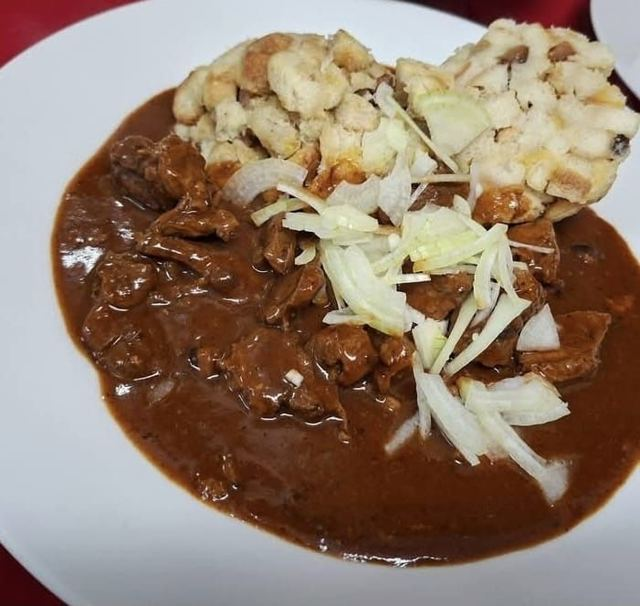
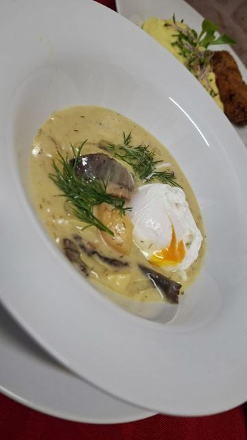
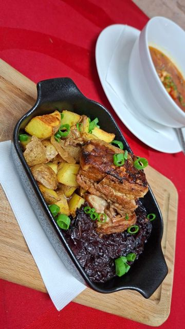
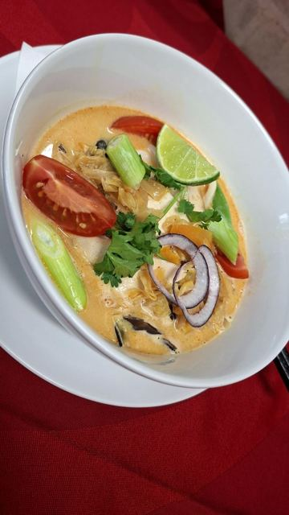
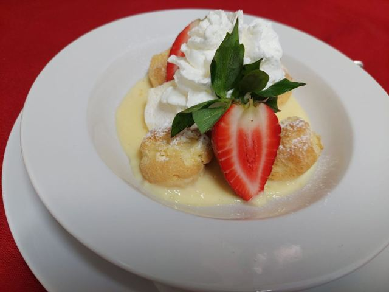
Na čepu i jinak
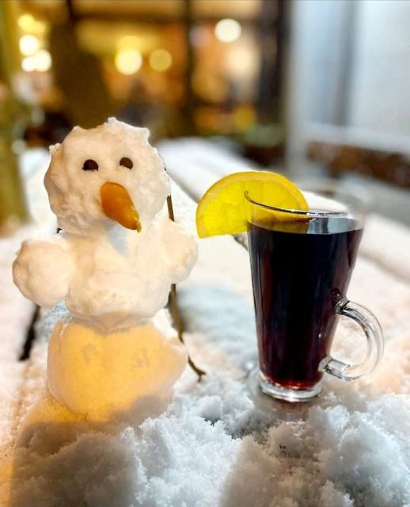
Hospůdka a zahrádka
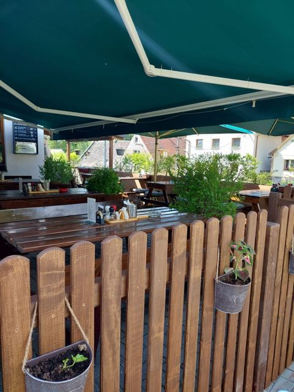
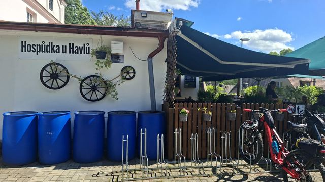
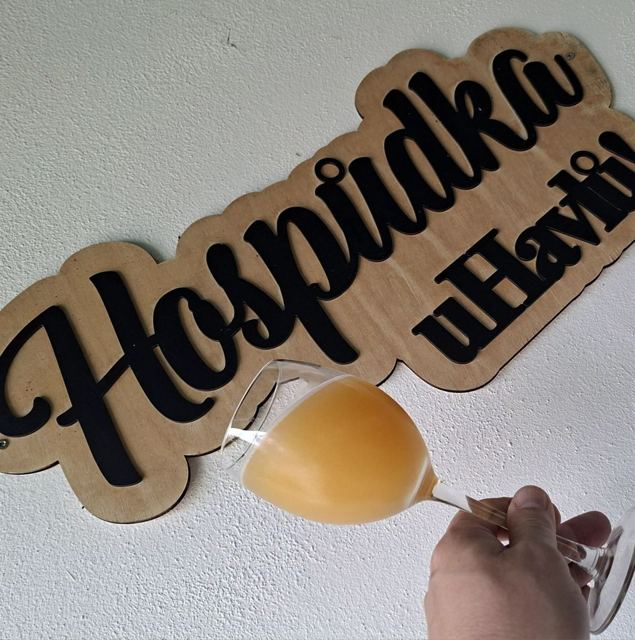
To jsme my
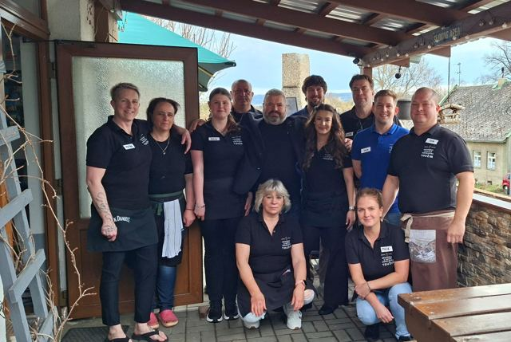
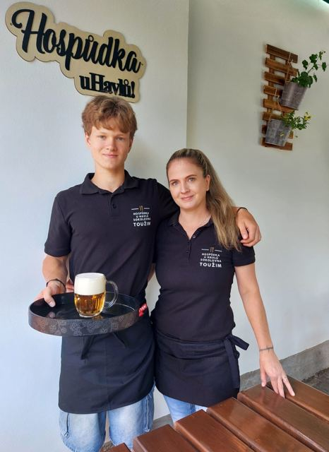
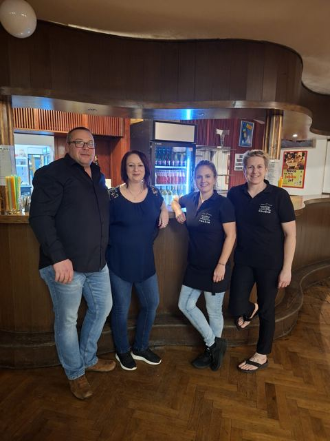
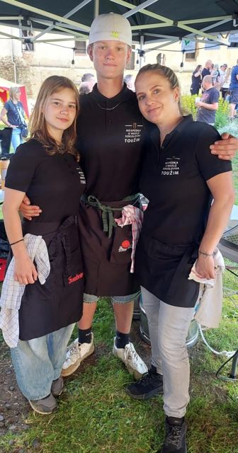
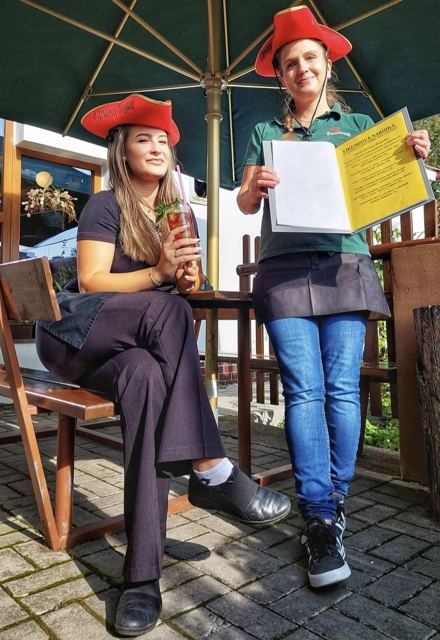
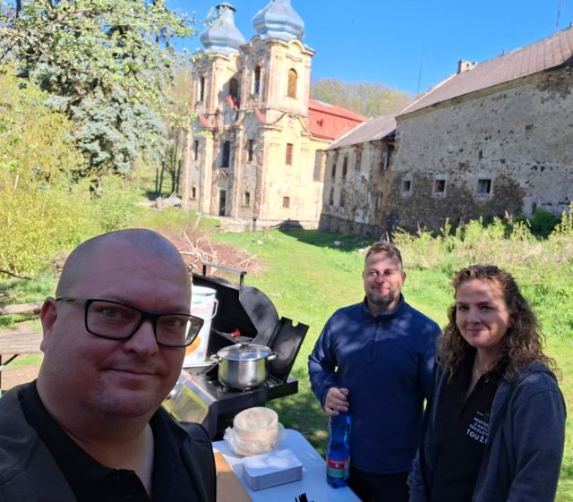
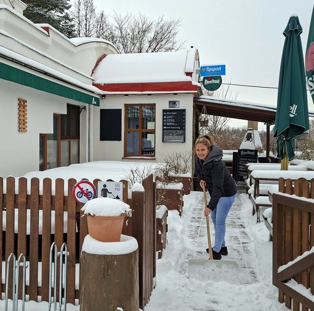
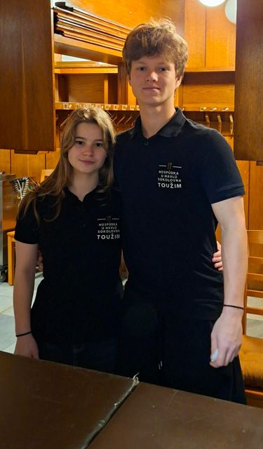
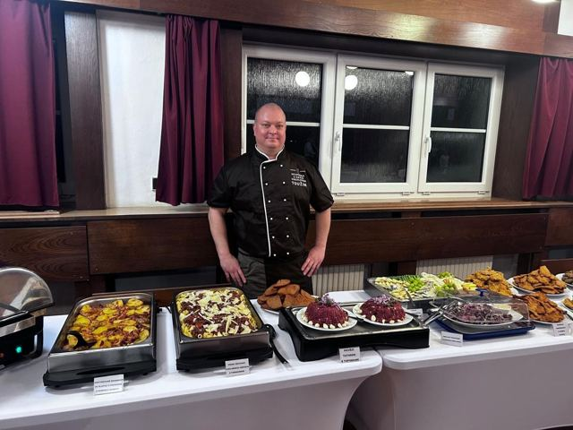
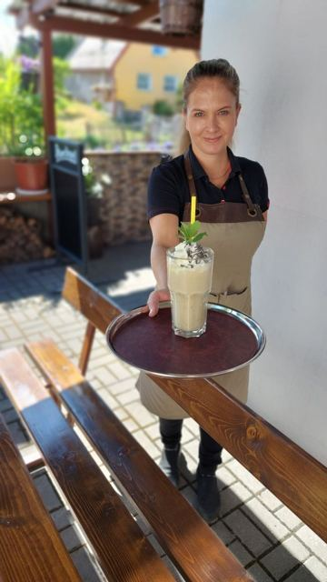
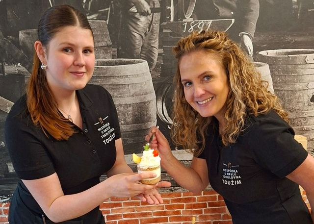
Otevírací doba
| Pondělí | zavřeno |
|---|---|
| Úterý | zavřeno |
| Středa | 14:30 – 22:00 |
| Čtvrtek | 14:30 – 22:00 |
| Pátek | 14:30 – 24:00 |
| Sobota | 11:00 – 24:00 |
| Neděle | 11:00 – 20:00 |
Změny a svátky hlásíme na Facebooku.

Kontakt
Hospůdka u Havlů – Sokolovna Toužim
Plzeňská 334, 364 01 Toužim
Telefon do hospody: +420 604 782 468
E-mail: tomiomusic@centrum.cz
IČO: 76287441
Parkování zdarma hned za budovou.